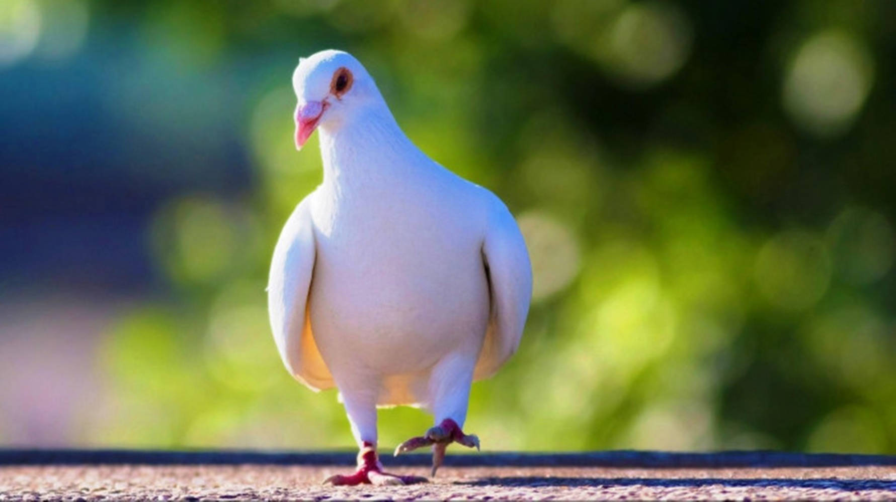

Dove
|  | Barbary doves (Streptopelia risoria), also known as ringneck doves, carry a mutation that makes them completely white. These white Barbary doves are most commonly used in stage magic acts. White Barbary doves are sometimes released in large public ceremonies as a peace symbol, and at weddings and funerals. However, releases usually use homing pigeons, as Barbary doves lack the homing instinct and will die if released into the wild. White pigeon in Chandigarh Albinism or other genetic anomalies that produce an entirely white dove occur very rarely in the wild since an all-white coloration would make these birds stand out in their natural habitats, leaving them highly vulnerable to predators. |